Ferslev
Grobkörniger, rötlicher Granit
Länge: 106,5 cm
Größte Breite: 30,5 cm
Runenhöhe: 9 bis 10,8 cm
Runeninschrift :
Toke, Lutaris Sohn, setzte diesen Stein zum Andenken an Astig, seinen Sohn.
27 - Ferslev - Letztes Update 17.08.2025
Listennummer : DR 145 / DK NJy 43
| Navidaten: 56.95129 9.89720 oder: Rævedalsvej 1, 9230 Svenstrup J |
Transliteration: (t)uki : sati : stin : þąnsi : aft : | : ąsta : sun : sin : lutaris : sun
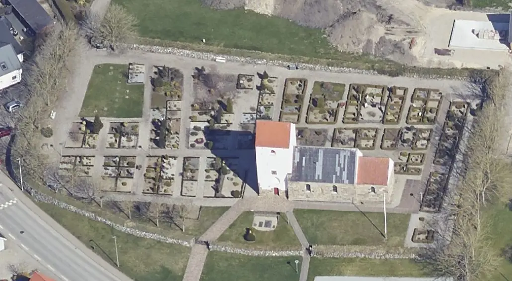
Das ist ein Luftfoto vom 18.04.2023 von Skråfoto das die Kirche von Ferslev zeigt. Skråfoto ist eine Webanwendung, die von Klimadatastyrelsen weltweit kostenlos bereitgestellt wird - Freie Nutzung unter Beachtung der Lizenz: CC BY 4.0. Die Aufnahmen werden seit 2017 alle zwei Jahre erneuert und neben einer Senkrechtaufnahme wird ein Schrägbild aus jeder Himmelsrichtung angeboten, das man über eine Adresssuche aufrufen kann.
Im Rahmen meiner 2022er Jütland Wikingertour war ich am Donnerstag, 02.06.2022, vor Ort. Die Kirche war verschlossen, aber es wurde mir von einem Bauteam, das die Außenfassade der Kirche inspizierte auf Nachfrage erklärt, dass alsbald ein Schlüsselträger hinzukommt. Darüber wurde mir dann doch noch der Zutritt ermöglicht. Bei dem letzten Foto rechts habe ich mit der Bildbearbeitung experimentiert, um die Runenschrift deutlicher wiederzugeben. Aber auch kein Vergleich mit dem Foto des Profis Roberto Fortuna der die Inschrift mit seiner Hightech Ausrüstung optimal ausleuchten/aufnehmen konnte - siehe unten.
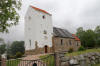 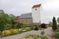 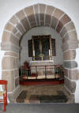 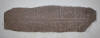 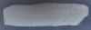
Bislang hatte ich die Ferslev Kirche nur einmal am Dienstag, 02.08.1988 besucht. Bei der Gelegenheit hatte ich auch das (schlechte) Foto im linken Frame aufgenommen. Unglaublich, bald 35 Jahre her!
Schon bei seiner Entdeckung war der Stein als Baumaterial zurechtgehauen und in der Kirche vermauert gewesen. Er saß nämlich in der Triumphbogenmauer der Ferslev-Kirche, aber so, dass die unteren beiden Wörter hinter der Nordwand des Chores verborgen waren. Deshalb wurden diese im Jahre 1878 freigelegt. Irgendwann päter wurde er dort wieder komplett herausgenommen und an seinem heutigen Platz, der westlichen Wand des Waffenhauses, eingemauert. Aber er wurde leider liegend und nicht der Leserichtung folgend senkrecht vermauert. Der Runenstein wird in den Zeitraum 970 bis 1020 datiert. Die Inschrift verläuft bustrophed (abwechselnde Schreibrichtung) in der unteren Linie von links nach rechts und in der oberen Linie entgegengesetzt.
Der Runenstein wurde erstmals im Jahre 1654 durch Johannes Meier ( ca. 1660 - Lehrer und Verfasser) in seiner handgeschriebenen Liber monumentorum Danicorum, qvi monumenta Danica Olai Wormii partim emendat partim locupletat (pdf-Datei anhand eigener Fotos von mir erstellt) von 1654 (Blatt 7) - Königlichen Bibliothek in Kopenhagen - GKS 2371 kvart - erwähnt Er berichtet darin, dass der Stein um 1120, beim Bau der Kirche, von einem Hügel bei Voldsted (ca. 5 km südlich von Ferslev) herbeigebracht worden sei.

 Bildquelle:
Wikipedia - Lizenz:
Public Domain
Bildquelle:
Wikipedia - Lizenz:
Public Domain
hinzugefügt worden sein. Text und Zeichnungen der Handschrift - auch im Zusammenspiel - sind ansehnlicher ausgeführt als in NKS 799. .
In der Königlichen Bibliothek in Kopenhagen hat sich von Johannes Meier aber auch noch eine zweite Handschrift erhalten - NKS 799 kvart - Joh. Mejeri Monumenta Runica in Dania (pdf-Datei anhand eigener Fotos von mir erstellt). Deren Entstehungsdatum ist nicht bekannt. Der Runenstein findet sich auf Blatt 5.
NKS 799 kvart - Joh. Mejeri Monumenta Runica in Dania - Papier - 44 Blatt, Blatt 41-44 unbeschrieben, aus dem 18. Jahrhundert, vormals Nr. 70 in der Manuskript Sammlung von Peder Frederik Suhm (*18.10.1728 - 07.09.1798)
 Bildquelle:
Wikipedia - Lizenz:
Public Domain
Bildquelle:
Wikipedia - Lizenz:
Public Domain
Es handelt sich um
ein Büchlein mit einfachem Pappeinband, der Buchrücken ist aus Leder und
verstärkte Ecken aus Leder weist der Buchdeckel auf. Es hat die
Maße: H: ca. 20
cm / B: ca. 17 cm / D: ca. 1,5 cm. Zu den einzelnen Zeichnungen im Büchlein
wurde ein einfacher Maßstab abgebildet.
Bei beiden Exemplaren
weist immer das rechte Blatt der Doppelseite in der oberen Ecke eine mit
Bleistift geschriebene Seitenzahl auf. Diese beiden Werke sind Abschriften von
früheren Werken, die die Zeit nicht überdauert haben.
Vielleicht sind sie in
Kopenhagen beim
Großbrand von 1728
vernichtet worden, als neben zahlreichen privaten Beständen auch ca.
35.000 Bücher der Kopenhagener Bibliothek ein Raub der Flammen wurden!
Die
GKS 2371 kvart soll laut
Prof. Ludv. F. A. Wimmer
(*07.02.1839 -
29.04.1920, Philologe und Runenforscher
-
link-LIVES -
Politiets registerblade
-
Bestattungsprotokoll)
 Bildquelle:
Fotografie zw. 1877-1900 von Fotograf Hansen & Weller
-
Det Kgl. Biblioteks billedsamling - Lizenz:
Public Domain
Bildquelle:
Fotografie zw. 1877-1900 von Fotograf Hansen & Weller
-
Det Kgl. Biblioteks billedsamling - Lizenz:
Public Domain
und seinen Infos von Christian Walter Bruun (*10.12.1831 - 28.02.1906, Königlicher Oberbibliothekar - link-LIVES)
 Bildquelle: Fotografie
um 1880 von Fotograf J. Petersen
(*19.03.1829 -
01.02.1905) -
Det Kgl. Biblioteks billedsamling - Lizenz:
Public Domain
Bildquelle: Fotografie
um 1880 von Fotograf J. Petersen
(*19.03.1829 -
01.02.1905) -
Det Kgl. Biblioteks billedsamling - Lizenz:
Public Domain
von
Niels Foss selbst abgeschrieben worden sein. Er hat die Texte laut
den Studien von
Erik Moltke
(*04.04.1901 - 19.10.1984, Runologe, Historiker)
offenbar überarbeitet, verkürzt oder geändert und seine eigene
Orthografie eingebracht (z.B. alt: haffuer - bei Foss: haver / tyck/tyk /
kircke/kirke / oc/og u.a.). Von
Niels Foss hat sich in der Königlichen Bibliothek
in
Kopenhagen dieses handschriftliches Werk "Nogle
Artikler fra Storfyrsten af Moscow, tilsendte Kong Christian II, ang. Grændserne
imellem Norge, Sverrig og Rusland, samt andet meere"
erhalten, worüber man mal selbst die Handschriften abgleichen kann.
In der
NKS 799 kvart hingegen steht auf der Seite 37 links unten "Niels
Knudsen Jerne" und seine Handschrift lässt vermuten, dass er die
gesamte Abschrift angefertigt hat. Er war offenbar ein professioneller Schreiber
und könnte mit dem Niels Knudsen identisch sein, der
1728 "Skriverkarl" auf dem Holmen (Stadtviertel von
Kopenhagen) war, also ein Mann der schnell viele Texte schreiben und liefern
konnte. Er wurde am 08.11.1737 zum "ekvipageskriver"
ernannt. Es scheint dass er sich entgegen
Niels Foss sehr eng an das Original gehalten hat.
Offenbar gab es laut dem Katalog über die Büchersammlung
von
Peter
Hansen Resens (*17.06.1625 -
01.06.1688)
 Bildquelle:
Wikipedia - Lizenz:
Public Domain
Bildquelle:
Wikipedia - Lizenz:
Public Domain
"Bibliotheca Regiæ Academiæ Hafniensi donata" Hafniæ (Kopenhagen) von 1685 - siehe S. 273 - früher noch ein drittes Werk von Johannes Meier mit dem Titel "Johan. Meieri liber MS. de Monumentis Runicis sive antiqvis Danicics".
Quellen: Erik Moltke - Jon Skonvig og de andre runetegnere. Et bidrag til runologiens historie i Danmark og Norge I-II, 1956-58 Band 2 - Kapitel 13
Zwischen Montag, 26.09.2022, und Mittwoch, 28.09.2022, habe ich in der Königliche Bibliothek - Den sorte Diamant - in Kopenhagen - u.a. diese beiden alten Handschriften nach Online-Vorbestellung zur Ansicht erhalten. Ich durfte mir Aufzeichnungen machen, sie aber auch uneingeschränkt fotografieren. Ich habe sie mit dem Smartphone komplett als Doppelseiten fotografiert und daraus jeweils eine pdf-Datei erstellt. Vielleicht hat ja jemand Bedarf an diesen seltenen Ausgaben, die aufgrund ihres Alters keinem Urheberrrecht mehr unterliegen.
Peder Pedersen Syv (*22.02.1631 - 18.02.1702, dänischer Linguist und Sammler von Volkserinnerungen)
 Bildquelle:
Wikimedia - Lizenz:
Public Domain
Bildquelle:
Wikimedia - Lizenz:
Public Domain
fertigte um 1685 diese Notiz an und gibt darin auch die Runeninschrift wieder - erhalten in "Rostgardiana 21, fol. 4" in der Königlichen Bibliothek in Kopenhagen.
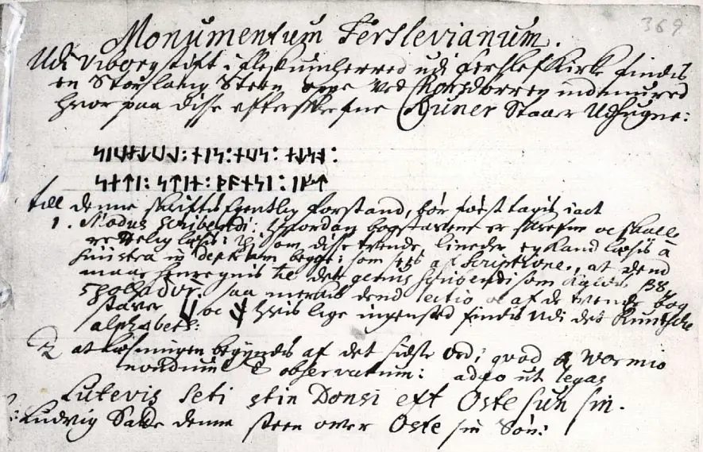
Quelle: Der digitalen Sammlung des Nationalmuseums Kopenhagen entlehnt. Lizenz: Public Domain - Original von mir unten zugeschnitten - Um die Passage zum verschwundenen Runenstein von Gudum gekürzt.
Handschriftlicher Text:
Monumentum Ferslevianum.
Udi Viborg stift i fleskumherred udi ferslef Kirke findes en Stor lang Steen oppe ved Korsdørren indmured hvor paa disse efterskrevne Runer Staar Udhugne:
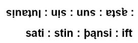
til denne skriftes egentlig forstand, bør først tagis iact
1. Modus scribendi: hvordan bogstaverne er skrefne oc skulle rettelig læses: thi som disse tvende lineder ej kand læses à sinistra in dextram begge: som sees af Scriptione, at dend maae henregnis til det genus scribendi som kaldes βουστροφήδον (Anm. Bustrophedon - wechselnde Schreib-/Leserichtung), saa merkis dend lectio oc af de tvende bogstaver
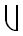
og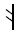
hvis lige ingensted findis Udi det Runische alphabeth:2. at læsningen beyndis af det sidste Ord, qvod a Wormio nondum esr observatorum: adeo ut legas
Lutevis seti stin Donsi eft Oste sun sin.
ɔ: Ludvig Satte denne sten over Oste sin Søn.
Quelle: Erik Moltke (*04.04.1901 - 19.10.1984, Runologe, Historiker), To runedokumenter, S. 208-209, in: Acta Philologica Scandinavica, Tidsskrift for nordisk sprogforskning, Niende Bind, 1934-35, S. 193-221
Die Zeichnung von Johannes Meier wurde im Jahr 1741 durch Erik Pontoppidan (der Jüngere, *03.09.1698 - 20.12.1764, dänisch-lutherischer Bischof, Theologe und Autor)
 Bildquelle:
Wikipedia - Lizenz:
Public Domain
Bildquelle:
Wikipedia - Lizenz:
Public Domain
in seinem Werk "Marmora Danica selectiora. 2", Seite 233, wiedergegeben . Dieses Werk/Zeichnung findet sich in einer digitalisierten Ausgabe im Internet über die Bayerische Staatsbibliothek / MDZ Münchener DigitalisierungsZentrum Digitale Bibliothek - urn:nbn:de:bvb:12-bsb10328985-6 - Einen Screenshot gebe ich hier wieder:
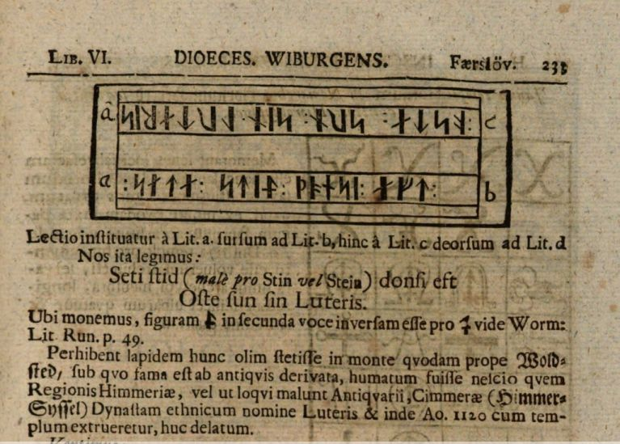
Erik Pontoppidan (der Jüngere, *03.09.1698 - 20.12.1764, dänisch-lutherischer Bischof, Theologe und Autor) berichtet in seinem anderen bedeutenden Werk "Den Danske Atlas" - Tomus V, Cap 1, Bind 1, S. 55 b (S. 33 b in der pdf-Datei) nochmals über diesen Runenstein: "Kirken har Taarn, og ellers intet af Merkværdighed, undtagen at ved Chorsdøren er i Muren indsattet en Runesteen, som ikke fndes i Wormii Monumentis, derpaa læses: Lutaris sati stin donsi aft Osta sun sin, det øvrige skiules af Muren."
Übersetzung: "Die Kirche hat einen Turm und sonst nichts Bemerkenswertes, außer dass an der Chortür ein Runenstein in die Wand eingelassen ist, der in Ole Worms großem Werk Danicorum Monumentorum Libri Sex nicht zu finden ist, auf dem zu lesen ist: "Lutaris Sohn, setzte diesen Stein zum Andenken an Astig, seinen Sohn, der Rest wird von der Wand verdeckt."
Diese zeichnerische Darstellung des Runensteins stammt aus dem Jahre 1776 von Søren Abildgaard (*18.02.1718 - 02.07.1791, Zeichner, Kupferstecher und Geologe)
 Bildquelle:
Jellingprojektet - Lizenz:
Public Domain -
http://www5.kb.dk/images/billed/2010/okt/billeder/object444188/da/
Bildquelle:
Jellingprojektet - Lizenz:
Public Domain -
http://www5.kb.dk/images/billed/2010/okt/billeder/object444188/da/
Das Originalblatt hat die Maße 16 x 24 cm.
Der digitalen Sammlung des Nationalmuseums Kopenhagen entlehnt. Lizenz: CC-BY-SA
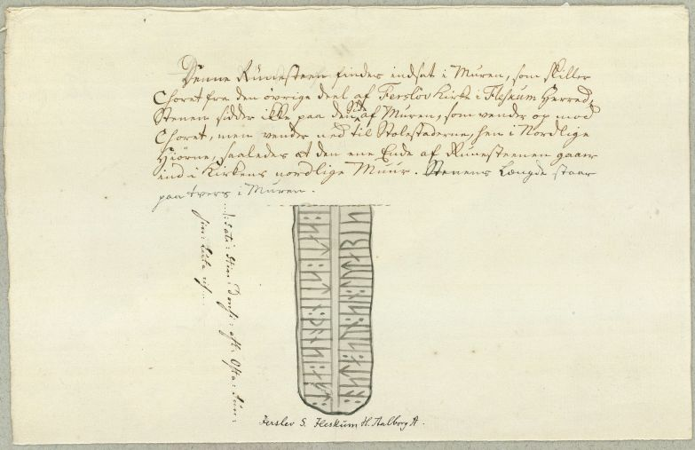
Der handschriftliche Text von Søren Abildgaard lautet:
"Denne Runesteen findes indsat i Muren, som skiller Choret fra den øvrige Deel af Ferslöv Kirke i Fleskum Herred. Steenen sidder ikke paa den Side af Muren, som vender op mod Choret, men vender ned til Stolestaderne, hen i Nordlige Hiörne, saaledes at den ene Ende af Runesteenen gaaer ind i Kirkens nordlige Muur. Stenens Længde staar paa tvers i Muren. (på tværs i forhold til stenen dens indskrift: ...Sat Stin donsi eft. Osta Sun sin Luta ris.)"
Übersetzung: "Dieser Runenstein befindet sich eingebettet in der Mauer, die den Chor vom Rest der Ferslev-Kirche in Fleskum Herred trennt. Der Stein befindet sich nicht auf der Seite der Wand, die dem Chor zugewandt ist, sondern zeigt nach unten zu den Stühlen in der nördlichen Ecke, sodass ein Ende des Runensteins in die Nordwand der Kirche übergeht. Der Steins sitzt der Länge nach quer in der Wand. (Die Inschrift steht links von Stein: ...setzte diesen Stein zum Gedenken an Astig, seinen Sohn Lutaris.)
In Kopenhagen haben sich in dem "Antikvarisk-Topografisk Arkiv", das dem Nationalmuseum angeschlossen ist, die Tagebücher von Søren Abildgaard erhalten. In seinem Tagebuch VI aus dem Jahr 1769 hat er diesen Eintrag / Zeichnung auf der S. 4 vorgenommen. Ich durfte am 27.09.2022 in dem Archiv die dort ebenfalls aufbewahrten Kopien durchsehen und dieses Foto fertigen.
Johan Gustav Liljegren (*27.02.1791 -02.06.1837, schwedischer Nationalarchivar und Archäologe)
 Bildquelle:
Schwedisches Reichsarchiv - Lizenz:
Public Domain
Bildquelle:
Schwedisches Reichsarchiv - Lizenz:
Public Domain
hat den Runenstein in seinem Werk "Run-Urkunder" von 1833 auf der S. 172 mit der Nummer 1534 aufgeführt.
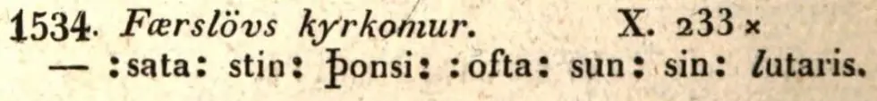
Dieses Werk findet sich in einer digitalisierten Ausgabe im Internet über die Bayerische Staatsbibliothek / MDZ Münchener DigitalisierungsZentrum Digitale Bibliothek - urn:nbn:de:bvb:12-bsb10431145-1 - Screenshot vom 08.11.2022.
Auch Prof. Jens Jacob Asmussen Worsaae (*14.03.1821 - 15.08.1885, dänischer Archäologe und Vorgeschichtler - link-LIVES - Bestattungsprotokoll)
 Bildquelle: Fotografie
zw. 1863-1900 von Fotograf Budtz Müller
(*26.12.1837 -
30.12.1884) -
Det Kgl. Biblioteks billedsamling - Lizenz:
Public Domain
Bildquelle: Fotografie
zw. 1863-1900 von Fotograf Budtz Müller
(*26.12.1837 -
30.12.1884) -
Det Kgl. Biblioteks billedsamling - Lizenz:
Public Domain
hat Ferslev aufgesucht und in seinem Tagebuch X, aus dem Jahr 1850, einen Eintrag auf der S. 100 vorgenommen (S. 101 Ferslev 2 Stein - siehe unten).
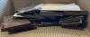 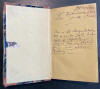 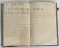
Dessen Tagebücher werden ebenfalls in Kopenhagen in dem "Antikvarisk-Topografisk Arkiv" aufbewahrt, worüber ich bei meinem Besuch am 27.09.2022 diese Fotos anfertigen konnte.
Rasmus Henrik Kruse (*07.08.1796 - 30.05.1877, Landschaftsmaler - Heirat 21.12.1851)
 Bildquelle:
Det Kgl. Biblioteks billedsamling
- Lizenz:
Public Domain
Bildquelle:
Det Kgl. Biblioteks billedsamling
- Lizenz:
Public Domain
hat handschriftliche Ausführungen in seiner Abhandlung "Nørre Jyllands Mærkværdigheder i det 19. Aarh. Hs. Bd 1-2 (med) Tillæg 1-2" zu dem Runenstein gemacht. Genaugenommen in Band II, 1852, S. 36, Zeichnung Nr. 8 / Ergänzungsband Tillæg 1, 1856, S. 10. Die beiden letztgenannten Einträge habe ich hier als Fotografien.


Dieses Werk wird heute in Nationalmuseum in Kopenhagen, Antikvarisk-Topografisk Arkiv, aufbewahrt. Dort durfte ich am Dienstag, 27.09.2022, zu Gast sein und die vier Bände in Händen halten und fotografieren.
Carl Christian Rafn (*16.01.1795 - 20.10.1864, Altertumsforscher - link LIVES - Bestattungsprotokoll)
 Bildquelle: Zeichner
Magnus Petersen -
Det Kgl. Biblioteks billedsamling - Lizenz:
Public Domain
Bildquelle: Zeichner
Magnus Petersen -
Det Kgl. Biblioteks billedsamling - Lizenz:
Public Domain
im Jahre 1856 in seinem Werk "Antiquités de l'Orient, monuments runographiques", S. 210 ff., kurze Ausführungen gemacht. Darin erklärt er auch, dass er für die Wiedergabe der Runenzeichen auf die Zeichnungen von Søren Abildgaard und Rasmus Henrik Kruse zurückgegriffen hat.
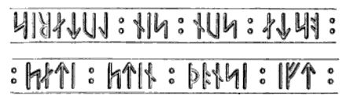
Durch George Stephens (*13.12.1813 - 09.08.1895, englischer Archäologe und Philologe)
 Bildquelle:
Minder fra min Virksomhed paa Arkæologiens
Omraade fra 1845 til 1908 von
Magnus Petersen (*04.09.1827 - 01.02.1917) auf der
Seite 265 - Lizenz:
Public Domain
Bildquelle:
Minder fra min Virksomhed paa Arkæologiens
Omraade fra 1845 til 1908 von
Magnus Petersen (*04.09.1827 - 01.02.1917) auf der
Seite 265 - Lizenz:
Public Domain
wurde in seinem Band 2 der "The Old-northern Runic Monuments of Scandinavia and England, 1867-68", auf Seite 673 die Zeichnung des Runensteins von Rasmus Henrik Kruse (*07.08.1796 - 30.05.1877, Landschaftsmaler) wiedergegeben, die er bei seinen Recherchen in den Archiven in Kopenhagen fand.
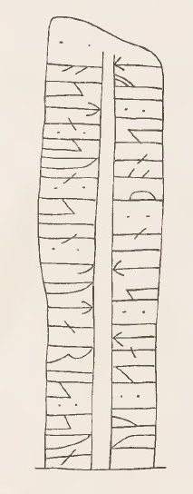
In seinem Band 3, 1884, hat er auf der S. 296 noch diesen Nachtrag aufgenommen.
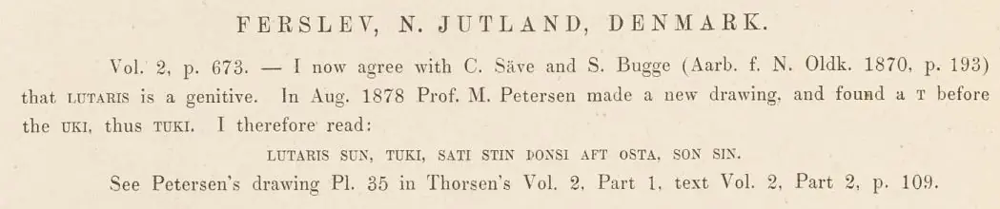
Prof. P. G. Thorsen (*07.08.1811 - 06.05.1883, Bibliothekar, Runenforscher und Historiker - link-LIVES - Artikel: Levnedsbeskrivelser af de ved Københavns Universitets Firehundredaarsfest promoverede Doktorer, Illustreret Tidende 1882, Nr. 1235 - vom 27.05.1833 / Grabstein in Varde / Eheschließung in Varde am 19. August 1848)
Fotografie zw. 1863-1900 von Fotograf Budtz Müller (*26.12.1837 - 30.12.1884) - Det Kgl. Biblioteks billedsamling - Lizenz: Public Domain
hat seine Beschreibung zu dem Runenstein in seinem Werk "De danske runemindesmærker beskrevne og forklarede, anden Afdeling, Jyllands Runemindesmærker, II. Text, 1880" ab der S. 109 wiedergegeben. Die u.a. Zeichnung von Prof. Julius Magnus Petersen (*04.09.1827 - 31.01.1917, Archäologischer Zeichner und Restaurator - link-LIVES - Bestattungsprotokoll)
 Bildquelle: Fotografie
von 1903 von Fotograf Marius Christensen
(*24.06.1874 -
25.06.1907) -
Det Kgl. Biblioteks billedsamling - Lizenz:
Public Domain
Bildquelle: Fotografie
von 1903 von Fotograf Marius Christensen
(*24.06.1874 -
25.06.1907) -
Det Kgl. Biblioteks billedsamling - Lizenz:
Public Domain
hingegen findet sich in seinem "Band I. Afbildninger, 1879" unter der Nummer 35 - Google Scan.
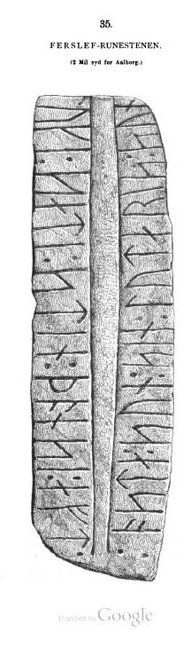
P. G. Thorsens Nachlass (Bezeichnet als: P. G. Thorsens optegnelser, tegninger m.m. vedrørende runer og runemindesmærker - überführt aus der Kopenhagener Universitätsbibliothek 1929 - Gemäß Ministerialschreiben vom 04.03.1929; früher benannt als Additamenta 612 kvart) - findet sich in der Königlichen Bibliotek unter NKS 3296 kvart (in mehreren einzelnen Pappschachteln). In der Pappschachtel Nr. 4 ist zu Ferslev etwas dabei. Es handelt sich dabei um zwei beschreibende Texte, der obere ist mit dem Datum 29. Juni 1838 versehen, die untere Notiz ist auf den 11. Juli 1838 (?) datiert und beide wurden m.E. von Thorsen selbst erstellt. Augenscheinlich hat er darauf zuerst den Eintrag von Erik Pontoppidan aus seinem Werk "Marmora Danica selectiora. 2", Seite 232, übersetzt. Im unteren Abschnitt bringt er die Informationen von Søren Abildgaard. In beiden Texten hat er deren jeweilige Zeichnungen eingebunden.
In dieser Sammlung, in der Pappschachtel mit der Nummer 17, finden sich zwei Zeichnungen des Runensteins. Eine Zeichnung stammt von Magnus Petersen (*04.09.1827 - 01.02.1917, Archäologischer Zeichner und Restaurator) und ist auf den 04.07.1870 datiert. Die andere Zeichnung wurde wohl von Rasmus Henrik Kruse (*07.08.1796 - 30.05.1877, Landschaftsmaler) gefertigt - vergleiche oben die Zeichnung aus dessen "Nørre Jyllands Mærkværdigheder i det 19. Aarh. Hs. Bd 1-2 (med) Tillæg 1-2" - oder wurde von P. G. Thorsen sehr gut nachgezeichnet.
Anhand der linken Zeichnung von Magnus Petersen kann man sich nun auch vorstellen, wie der Runenstein zuerst in der Kirche verbaut war, so wie es Søren Abildgaard schildert.
Prof. Ludv. F. A. Wimmer (*07.02.1839 - 29.04.1920, Philologe und Runenforscher - link-LIVES - Politiets registerblade - Bestattungsprotokoll)
Bildquelle:
Fotografie zw. 1877-1900 von Fotograf Hansen & Weller
-
Det Kgl. Biblioteks billedsamling - Lizenz:
Public Domain
bringt den Runenstein mit Text und Zeichnung in seinem großformatigen Werk "De danske runemindesmærker undersøgte og tolkede af Ludv. F. A. Wimmer, Andet Bind, Runestenene i Jylland og på øerne. 1899-1901, Nr. 32, S. 165 - eigener Scan aus der in meinem Besitz befindlichen Ausgabe. Er hat den Runenstein persönlich vor Ort am 13.August 1878 und nochmals am 22.07.1882 untersucht.
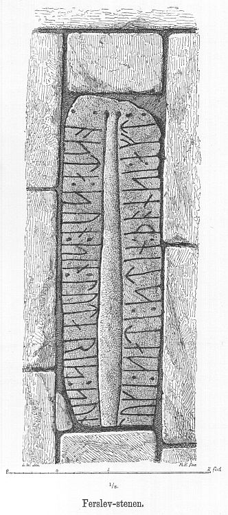
Zeichnung von Magnus Petersen gefertigt.
Ludv. F. A. Wimmer hat seine jahrelangen Aufzeichnungen der
"Kgl.
Bibliotek" in
Kopenhagen überlassen. Ein
Verzeichnis darüber wurde 1915 in Buchform herausgegeben
"Collectio
runologica Wimmeriana : Fortegnelse over
Ludv.
F.
A.
Wimmers runologiske o.
a.
Samlinger
i Det kgl.
Bibliotek"
-
In seinen Unterlagen in der Königlichen Bibliothek befinden sich unter "III - Originaltegninger af de danske Runemindesmærker, udførte paa Undersøgelsesrejserne af Magn. Petersen og kontrollerede paa Stedet af Ludv. Wimmer, samt Prøvetryk af de paa Grundlag af de nævnte Tegninger, Aftryk o. s. v. til De danske Runemindesmærker" udførte Afbildninger med Wimmers Rettelser"


zu dem Runenstein von Ferslev unter der Nr. 45 Aufzeichnungen von 1878 und 1882, wobei ich am 27.09.2022 diese Zeichnung von Magnus Petersen - datiert auf den 13.08.1878 - fotografieren durfte.
Erik Moltke (*04.04.1901 - 19.10.1984, Runologe, Historiker - link-LIVES)
 Bildquelle: Scan von Buchumschlag "Runerne i Danmark og ders
oprindelse" - Erik Moltke - 1976 - Lizenz:
CC-BY-SA
Bildquelle: Scan von Buchumschlag "Runerne i Danmark og ders
oprindelse" - Erik Moltke - 1976 - Lizenz:
CC-BY-SA
hat dieses Foto am 17.05.1931 aufgenommen (Foto von mir zugeschnitten).
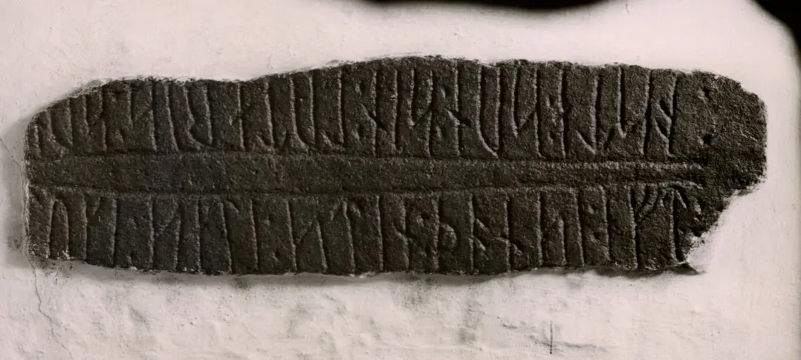
Der Digitalen Sammlung des Nationalmuseums Kopenhagen entlehnt - Lizenz: CC-BY-SA
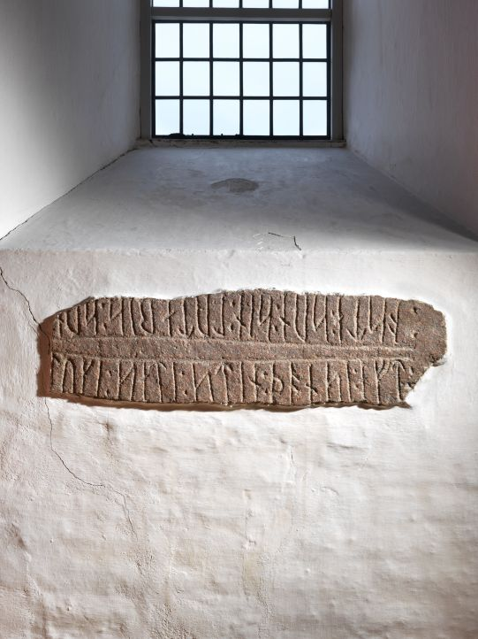
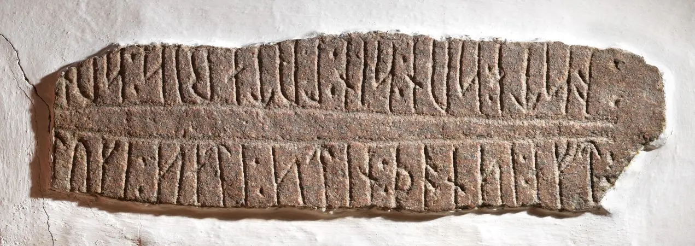
Im Vorfeld zu dem 2016 erschienenen Buch von Lisbeth M. Imer (*1973, Runologin am Nationalmuseum Kopenhagen) "Danmarks Runesten - en fortælling" reiste sie mit dem Fotografen Roberto Fortuna zur Bestandsaufnahme durch die Lande. Dieser nahm dieses herausragende Foto des Runensteins unter optimalen Bedingungen bei der Tour am 20. März 2012 auf (2. Foto - Zuschnitt von mir vorgenommen). Der Digitalen Sammlung des Nationalmuseums Kopenhagen entlehnt - Lizenz: CC-BY-SA
Der Eintrag in der dänischen Runendatenbank mit allen Informationen findet sich hier.
Die Informationen in "Fund og Fortidsminder" zu dem Runenstein finden sich hier. Darin ist inzwischen dieser Zustandsbericht des Steinrestaurators Leif Vognsen aus dem Jahr 2018 eingebettet.
Über diesen Link finden sich zu dem Runenstein Informationen des Forschungsprojektes "Runes" der Akademie der Wissenschaften zu Göttingen.
Über die Webseite von www.biopix-foto.de kann man ein Foto dieses Runensteins mit rot nachgezeichneten Runen anschauen, was natürlich eine deutlich verbesserte Ansicht darstellt, auch wenn die Runen im Vergleich zu anderen Runensteinen eigentlich gut lesbar sind.
Es gab vormals noch einen zweiten, kleinen Runenstein in Ferslev (Ferslev Stein 2 - DR 146), der wohl schon zurechtgehauen wurde, der nur noch wenige Runenzeichen aufwies und inzwischen leider verschwunden ist.
Von Rasmus Henrik Kruse (*07.08.1796 - 30.05.1877, Landschaftsmaler - link-LIVES - Heirat 21.12.1851)
Bildquelle:
Det Kgl. Biblioteks billedsamling
- Lizenz:
Public Domain
wurde er noch 1841 in der nördlichen Steineinfassung des Pfarrhofes gesehen. Von ihm wurde das Maß mit "1 Kvarter 3 ½ Tommer lang (ca. 25 cm)" angegeben. Die Runenzeichen seien "2 Tom. lange" gewesen. Seine handschriftlichen Ausführungen dazu haben sich in seiner Abhandlung "Nørre Jyllands Mærkværdigheder i det 19. Aarh. Hs. Bd 1-2 (med) Tillæg 1-2" erhalten. Genaugenommen in Band I, 1843, S. 54, Zeichnung Nr. 8 / Band II, 1852, S. 37, Zeichnung Nr. 9. erhalten.


Dieses Werk wird heute im Nationalmuseum in Kopenhagen, Antikvarisk-Topografisk Arkiv, aufbewahrt. Dort durfte ich am Dienstag, 27.09.2022, zu Gast sein und die vier Bände in Händen halten und fotografieren.
Prof. Jens Jacob Asmussen Worsaae (*14.03.1821 - 15.08.1885, dänischer Archäologe und Vorgeschichtler - link-LIVES - Bestattungsprotokoll)
Bildquelle: Fotografie
zw. 1863-1900 von Fotograf Budtz Müller
(*26.12.1837 -
30.12.1884) -
Det Kgl. Biblioteks billedsamling - Lizenz:
Public Domain
hat in seinem Notizbuch X zu seiner antiquarischen Reise durch Jütland im Jahr 1850 folgenden Eintrag auf der S. 101 hinterlassen. Er schreibt dort: "Præstegårdens havedige mod nord en lille stump" und bringt dann die Runenzeichen mit einem nachfolgenden kurzen Text.

Laut Ludv. F. A. Wimmer weicht sein Eintrag der Runenzeichen nur in einem winzigen Punkt von den Aufzeichnungen von Rasmus Henrik Kruse ab. Dieser hat nach den ersten drei Runenzeichen eine Trennung in Form von " : " während Worsaae dort nur einen Punkt erfasst hat. Sieht man sich den Tagebucheintrag von Worsaae aber genauer an, ist der zweite Punkt bei ihm auch vorhanden. Lediglich die Nachzeichnung mit Tinte über der ursprünglichen Bleistiftnotiz hat er diesbezüglich vergessen.
Durch Prof. Julius Magnus Petersen (*04.09.1827 - 31.01.1917, Archäologischer Zeichner und Restaurator - link-LIVES - Bestattungsprotokoll)
Bildquelle: Fotografie
von 1903 von Fotograf Marius Christensen
(*24.06.1874 -
25.06.1907) -
Det Kgl. Biblioteks billedsamling - Lizenz:
Public Domainn
konnte er 1870 untersucht werden, aber er zeichnete das kleine Bruchstück dabei offenbar nicht.
Im Nationalarchiv in Kopenhagen existiert ein anonymer, undatierter Abdruck (rechte Abbildung). Daneben ist die Zeichnung - siehe oben - von Rasmus Henrik Kruse abgebildet.
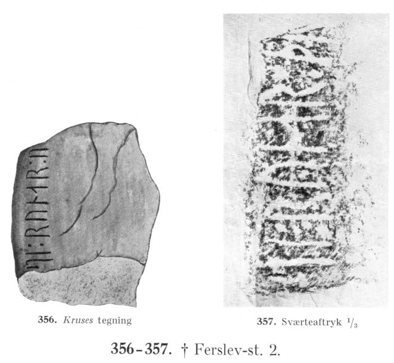
Beide sind in "Lis Jacobsen/Erik Moltke - Danmarks Runeindskrifter - 1941, - Atlas", S. 134, als Nr. 356-357, wiedergegeben. Einen Scan dazu habe ich aus dem in meinem Besitz befindlichen Exemplar gemacht.
Prof. Ludv. F. A. Wimmer (*07.02.1839 - 29.04.1920, Philologe und Runenforscher - link-LIVES - Politiets registerblade - Bestattungsprotokoll)
Bildquelle:
Fotografie zw. 1877-1900 von Fotograf Hansen & Weller
-
Det Kgl. Biblioteks billedsamling - Lizenz:
Public Domain
hat bei seinen beiden Besuchen in Ferslev (13.August 1878 und nochmals am 22.07.1882) erfolglos nach diesem Bruchstück gesucht. Dazu schreibt er in "De danske Runemindesmærker undersøgte og tolkede af Ludv. F.A. Wimmer, Band I.1" , S. CXLV:
"...Da das Fragment in Ferslev für mich von nicht geringem Interesse war, habe ich bei zwei verschiedenen Gelegenheiten mehr Zeit damit verbracht, danach zu suchen (1878 und 1882, gleichzeitig mit der Untersuchung des in der Kirche von Ferslev eingebetteten Runensteins); aber alle meine Bemühungen, wie die von mir damals veranlassten Untersuchungen verliefen ziemlich fruchtlos. Vor Ort befragte ich beide Male Bewohner des Pfarrhauses und andere Personen. Ich habe keinen Grund anzunehmen, dass der Stein zerstört wurde, und ich habe daher noch nicht alle Hoffnung aufgegeben, dass er eines Tages wieder auftauchen könnte."